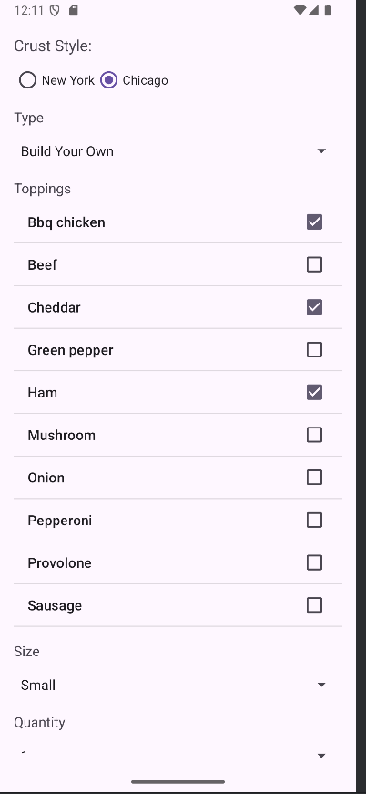

Restaurant Order App
View on GitHub
Overview
- Full-stack order management system with an Android mobile front end and a JavaFX desktop interface
- Built around a clean MVC architecture separating UI, business logic, and data across both platforms
Android Front End
- UI components including image buttons, RecyclerViews, and Toasts wired to backend logic for real-time feedback
- Dynamic menu and order views update responsively as items are added or modified
Architecture & Design
- FXML and CSS used for front-end layout design, enabling clean separation of markup from controller logic
- OOP structures throughout — enums, abstract classes, and interfaces model the restaurant domain accurately
- Shared domain model across Android and JavaFX, minimizing code duplication between platforms